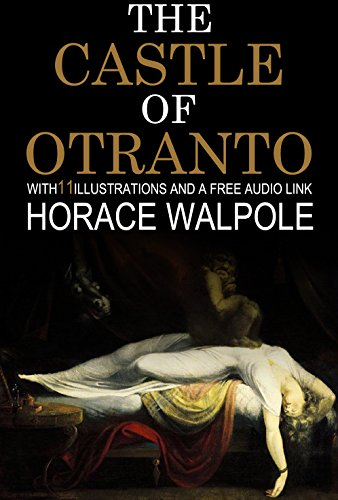
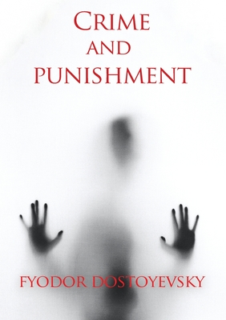

NANOBook Store
THE CASTLE OF OTRANTO

click on to go to pdf!
The Castle of Otranto is a novel by Horace Walpole. First published in 1764, it is generally regarded as the first gothic novel. In the second edition, Walpole applied the word 'Gothic' to the novel in the subtitle – A Gothic Story. Set in a haunted castle , the novel merged medievalism and terror in a style that has endured ever since . The aesthetic of the book has shaped modern-day gothic books, films, art, music and the goth subculture. Walpole was inspired to write the story after a nightmare he experienced at his Gothic Revival home , Strawberry Hill House in southwest London. The novel initiated a literary genre which would become extremely popular in the later 18th and early 19th century , with authors such as Clara Reeve , Ann Radcliffe , William Thomas Beckford , Matthew Lewis, Mary Shelley, Bram Stoker, Edgar Allan Poe, Robert Louis Steven- -son and George du Maurier.
The Castle of Otranto, novel by Horace Walpole, published under a pseudonym in 1764.
read more about the book....
THE MUMMY!

click on to go to pdf!
Published anonymously in three volumes when the author was only seventeen years old, The Mummy! is , as she describes it herself , a strange , wild novel that—to an audience nearer her future than when Loudon imagined it—is filled with striking similarities to our modern world , including a form of the internet. But it is also filled with brilliant flights of fancy: her court ladies wear hair ornaments of controlled flame; surgeons and lawyers may be steam-powered automatons ; people holiday by moving their entire home on rails. The visionary technological setting contrasts with a morality seemingly gone awry as it falls to the reanimated mummy Cheops to try to find a role in this corrupted society . A lost curio of Victorian futurism waiting to be discovered, The Mummy! is as bizarre and entertaining as it’s premise promises—and more.
The Mummy! A Tale of the Twenty-Second Century is an 1827 three-volume novel written by Jane Webb-Loudon.
read more about the book....
THE CRIME AND PUNISHMENT

click on to go to pdf!
Crime and Punishment focuses on the mental anguish and moral dilemmas of Rodion Raskolnikov, an impoverished ex-student in Saint Petersburg who formulates a plan to kill an unscrupulous pawnbroker for her money . Before the killing , Raskolnikov believes that with the money he could liberate himself from poverty and go on to perform great deeds . However , once it is done he finds himself racked with confusion, paranoia, and disgust for his actions. His justificatio- -ns disintegrate completely as he struggles with guilt and horror and confronts the real-world consequences of his deed.
the novel by Fyodor Dostoevsky in the summer of 1865.
read more about the book....